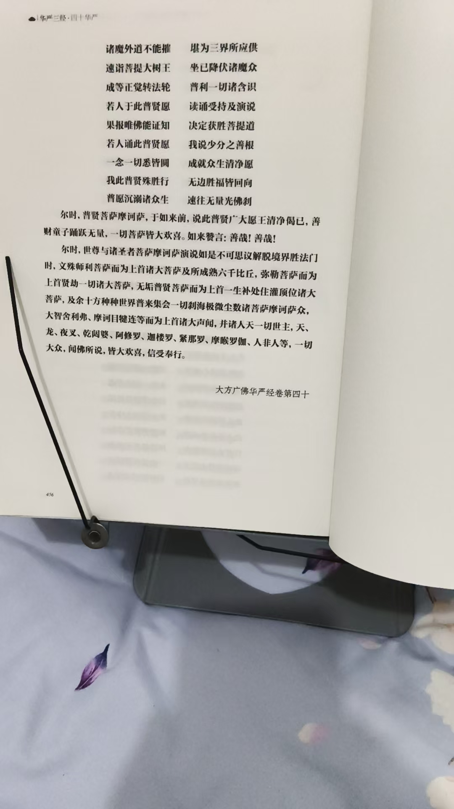
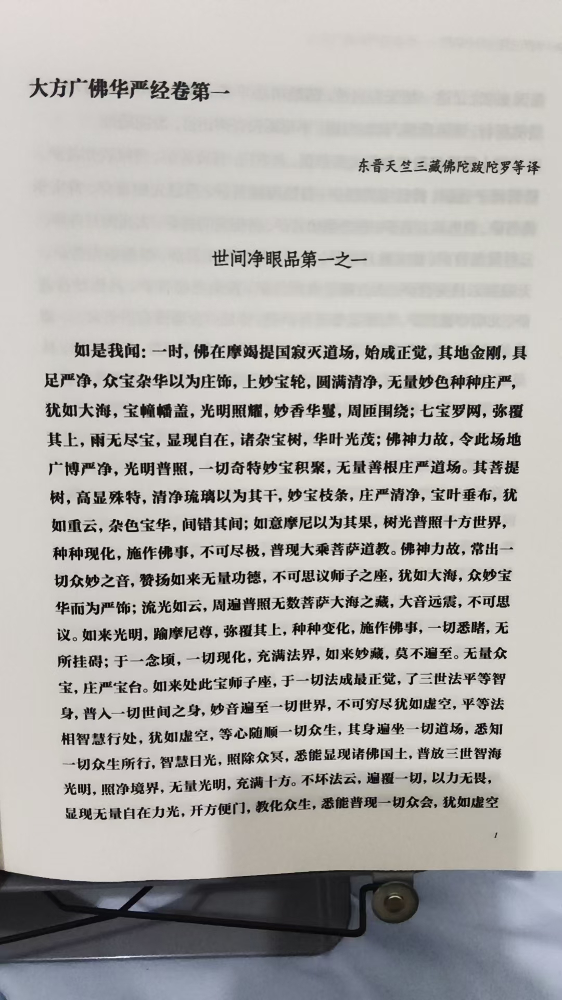
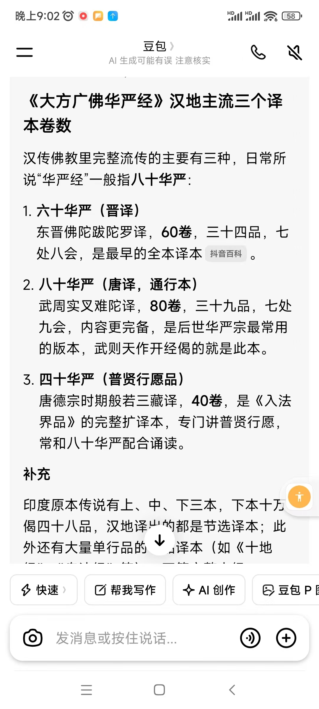
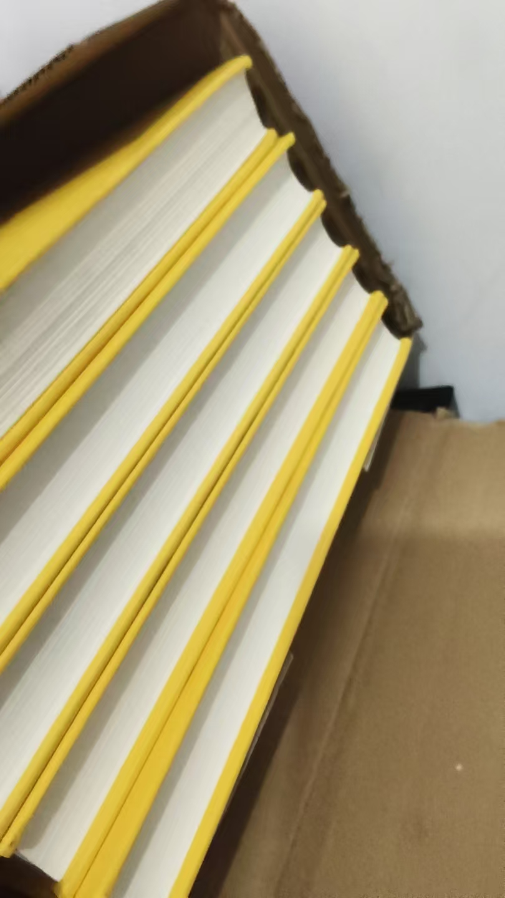
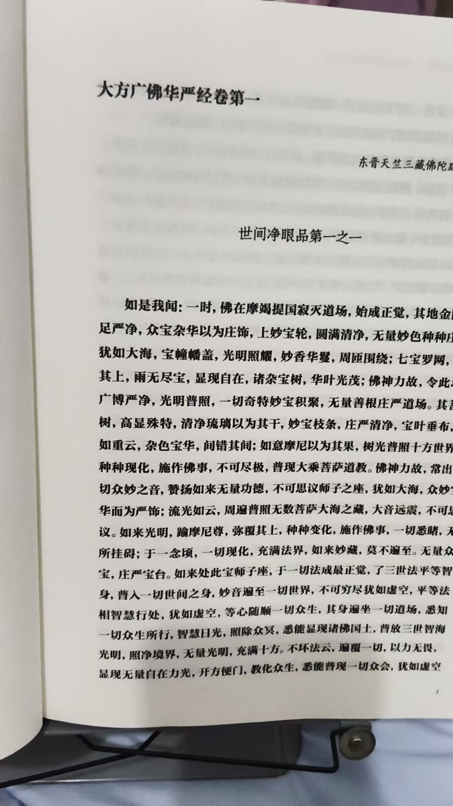

20260826明天中元节
民间文化风水布局修炼修行明天中元节，
如果近几日，身体沉闷，大脑不清醒，或有各种怪异事发生，
明天就老老实实去祭祖
无非就是要阴宅别墅，衣服，酒食，元宝香火，
要财库是帮后代存财
前几天，一个人来问，自己出了车祸，感觉怪异，
开了几十年，根本就不可能发生的事
我看了一下，他祖坟里，奶奶黄黄的
我说，你家祖坟，女阴人已经犯煞了
绝对不止你一个人出事
这人说，还有四个姑家的孩子，大大小小都出了车祸
二姑家女儿带着孩子钻到车底下，住了好长时间院
阴人要东西
第一年要，没什么事
二年要，阴人发灰色
生怒了
干扰后代，
后代对应做事不顺利，
三年要，阴人发黄
到每一个孩子家里去，打骂攻击后代
后代孩子就出事，疾病
哪一个阴人容易犯煞
就是最后一个过去的
不一定是男是女
这还是家人吗[破涕为笑]
就是活着的，你不给他吃，不给他买新衣服，照样打架[呲牙][呲牙]
太岁，是一年里最大的保护神
但是触犯太岁
就要种种不顺利
一个意思
二哥家儿子，考研去陕西，没面试上
我说赶紧回家祭祖
我给他操作的
学校里，同意调剂
去了合肥211
今年毕业了，去了北京，中一建
我跟他们说，要重重的答谢祖先
明天一块回去祭祖
华严经中，即使到了最后，也是心法修炼
跟我讲的一样，前边是至大无垠
最后是至小无内
及时理解了，也很难修完
所以说，艺无止境
这里说到，见一切世界，所有极微一一尘中
出一切世界极微尘数如来光网云
周遍照耀
这就是常听说的，粟中有仓海，沙中含世界
微妙至极
再次找到我教学完美实证

终于读完了
明憨山大师说，不读楞严，不知修行迷悟之关键
不读法华，不知如来救世之苦心
不读华严，吧知佛家之富贵
明天开始，早上读四十华严
慢读慢修
其余时间读六十华严
这就是时间，道经还没开始，乾隆大藏经几十年也读不完
已经不是时间紧迫的问题了
是没有时间了




这就是华严三经
四十六十八十华严